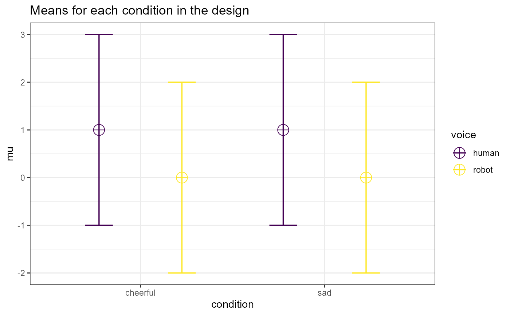

R/ANOVA_design.R
ANOVA_design.RdDesign function used to specify the parameters to be used in simulations
ANOVA_design( design, n, mu, sd, r = 0, labelnames = NULL, plot = Superpower_options("plot") )
| design | String specifying the ANOVA design. |
|---|---|
| n | Sample size in each condition |
| mu | Vector specifying mean for each condition |
| sd | standard deviation for all conditions (or a vector specifying the sd for each condition) |
| r | Correlation between dependent variables (single value or matrix) |
| labelnames | Optional vector to specifying factor and condition names (recommended, if not used factors and levels are indicated by letters and numbers) |
| plot | Should means plot be printed (defaults to TRUE) |
Returns single list with simulated data, design, design list, factor names, formulas for ANOVA, means, sd, correlation, sample size per condition, correlation matrix, covariance matrix, design string, labelnames, labelnameslist, factor names, meansplot
"dataframe"A sample dataframe of what data could look like given the proposed parameters.
"design"aov The design string, e.g. "2b*2w".
"design_list"The list of variables in the design.
"frml1"The first formula created for this design.
"frml2"The second formula created for this design.
"mu"Vector of means.
"sd"Vector of standard deviations.
"r"Common correlation coefficient.
"n"Sample size per cell. Can be entered as a single value or list of sample sizes for each condition. If unequal n is entered then the design can only be passed onto ANOVA_power.
"cor_mat"The correlation matrix.
"sigmatrix"The variance-covariance matrix.
"design_factors"Total number of within-subjects factors.
"labelnames"List of the label names.
"labelnameslist"Secondary list of labelnames
"factornames"List of the factor titles.
"meansplot"Plot of the experimental design.
Varying the sd or r (e.g., entering multiple values) violates assumptions of homoscedascity and sphericity respectively
## Set up a within design with 2 factors, each with 2 levels, ## with correlation between observations of 0.8, ## 40 participants (who do all conditions), and standard deviation of 2 ## with a mean pattern of 1, 0, 1, 0, conditions labeled 'condition' and ## 'voice', with names for levels of "cheerful", "sad", and "human", "robot" ANOVA_design(design = "2w*2w", n = 40, mu = c(1, 0, 1, 0), sd = 2, r = 0.8, labelnames = c("condition", "cheerful", "sad", "voice", "human", "robot"))#> The design is specified as: 2w*2w #> Summary of means (mu) and standard deviations (SD) #> mu SD condition voice #> 1 1 2 cheerful human #> 2 0 2 cheerful robot #> 3 1 2 sad human #> 4 0 2 sad robot #> #> Correlation Matrix #> cheerful_human cheerful_robot sad_human sad_robot #> cheerful_human 1.0 0.8 0.8 0.8 #> cheerful_robot 0.8 1.0 0.8 0.8 #> sad_human 0.8 0.8 1.0 0.8 #> sad_robot 0.8 0.8 0.8 1.0